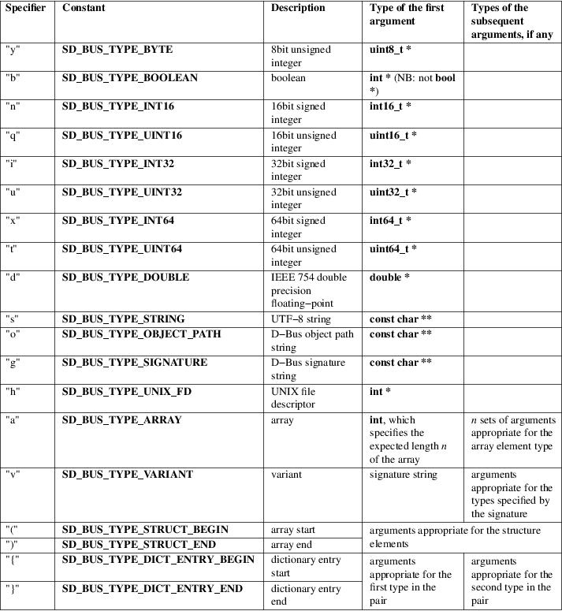

sd_bus_message_read, sd_bus_message_readv, sd_bus_message_peek_type − Read a sequence of values from a message
#include <systemd/sd−bus.h>
|
int sd_bus_message_read(sd_bus_message *m, const char *types, ...); | |
|
int sd_bus_message_readv(sd_bus_message *m, const char *types, va_list ap); | |
|
int sd_bus_message_peek_type(sd_bus_message *m, char *type, const char **contents); |
sd_bus_message_read() reads a sequence of fields from the D−Bus message object m and advances the read position in the message. The type string types describes the types of items expected in the message and the field arguments that follow. The type string may be NULL or empty, in which case nothing is read.
The type string is composed of the elements described in sd_bus_message_append(3), i.e. basic and container types. It must contain zero or more single "complete types". The type string is NUL−terminated.
For each type specified in the type string, one or more arguments need to be specified after the types parameter, in the same order. The arguments must be pointers to appropriate types (a pointer to int8_t for a "y" in the type string, a pointer to int32_t for an "i", a pointer to const char* for an "s", ...) which are set based on the values in the message. As an exception, in case of array and variant types, the first argument is an "input" argument that further specifies how the message should be read. See the table below for a complete list of allowed arguments and their types. Note that, if the basic type is a pointer (e.g., const char * in the case of a string), the argument is a pointer to a pointer, and also the pointer value that is written is only borrowed and the contents must be copied if they are to be used after the end of the message's lifetime. If the type is "h" (UNIX file descriptor), the descriptor is not duplicated by this call and the returned descriptor remains in possession of the message object, and needs to be duplicated by the caller in order to keep an open reference to it after the message object is freed.
Each argument may also be NULL, in which case the value is read and ignored.
Table 1. Item
type specifiers

If objects of the specified types are not present at the current position in the message, an error is returned.
The sd_bus_message_readv() is equivalent to the sd_bus_message_read(), except that it is called with a "va_list" instead of a variable number of arguments. This function does not call the va_end() macro. Because it invokes the va_arg() macro, the value of ap is undefined after the call.
sd_bus_message_peek_type() determines the type of the next element in m to be read by sd_bus_message_read() or similar functions. On success, the type is stored in type, if it is not NULL. If the type is a container type, the type of its elements is stored in contents, if it is not NULL. If this function successfully determines the type of the next element in m, it returns a positive integer. If there are no more elements to be read, it returns zero.
On success, these functions return a non−negative integer. On failure, they return a negative errno−style error code.
Errors
Returned errors may indicate the following problems:
−EINVAL
Specified type string is invalid or the message parameter is NULL.
−ENXIO
The message does not contain the specified type at current position.
−EBADMSG
The message cannot be parsed.
−EBUSY
When reading from a container, this error will be returned if unread elements are left in the container.
These APIs are implemented as a shared library, which can be compiled and linked to with the libsystemd pkg-config(1) file.
Read a single basic type (a 64−bit integer):
sd_bus_message
*m;
int64_t x;
sd_bus_message_read(m, "x", &x);
Read a boolean value:
sd_bus_message
*m;
int x; /* Do not use C99 'bool' type here, it's typically
smaller
in memory and would cause memory corruption */
sd_bus_message_read(m, "b", &x);
Read all types of integers:
uint8_t y;
int16_t n;
uint16_t q;
int32_t i;
uint32_t u;
int32_t x;
uint32_t t;
double d;
sd_bus_message_read(m, "ynqiuxtd", &y, &n, &q, &i, &u, &x, &t, &d);
Read a structure composed of a string and a D−Bus path:
const char *s, *p;
sd_bus_message_read(m, "(so)", &s, &p);
Read a variant, with the real type "gt" (signature, unsigned integer):
const char *s;
uint64_t *v;
sd_bus_message_read(m, "v", "gt", &s, &v);
Read a dictionary containing three pairs of type {integer=>string}:
int i, j, k;
const char *s, *t, *u;
sd_bus_message_read(m, "a{is}", 3, &i, &s, &j, &t, &k, &u);
Read a single file descriptor, and duplicate it in order to keep it open after the message is freed.
sd_bus_message
*m;
int fd, fd_copy;
sd_bus_message_read(m,
"h", &fd);
fd_copy = fcntl(fd, FD_DUPFD_CLOEXEC, 3);
systemd(1), sd-bus(3), sd_bus_message_read_basic(3), sd_bus_message_skip(3), sd_bus_message_append(3), sd_bus_message_enter_container(3)